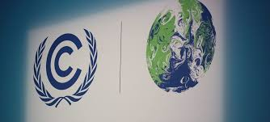
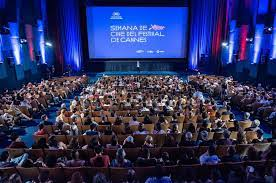
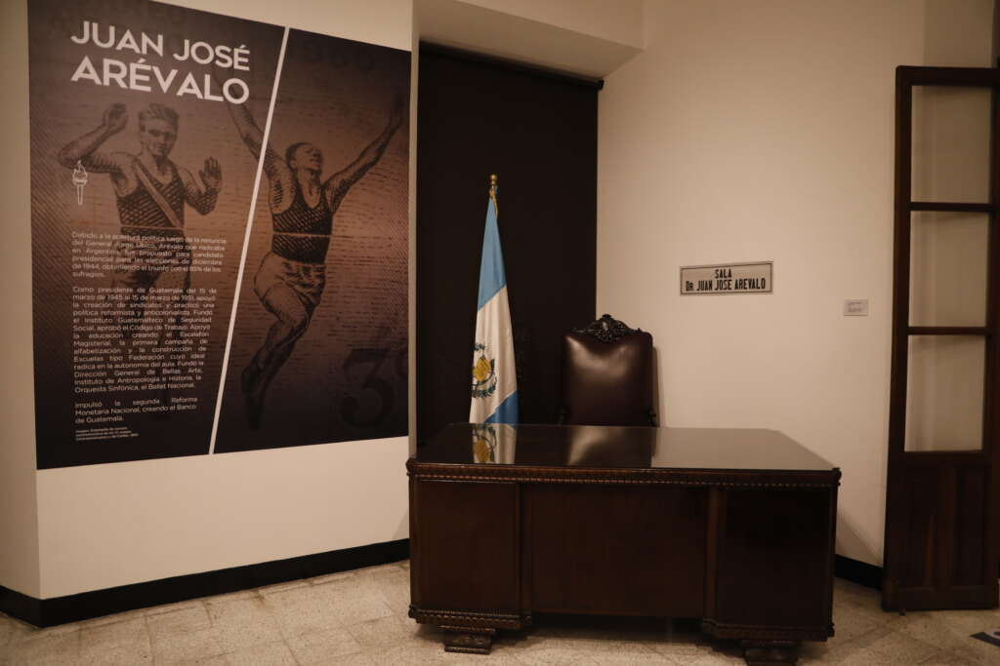

GINEBRA, SUIZA Tras una maratónica sesión de negociación que se extendió por 24 horas adicionales, los
representantes de 198 países lograron un acuerdo trascendental en la Cumbre del Clima (COP30) de las
Naciones Unidas. El punto central del acuerdo es la creación de un nuevo mecanismo de financiamiento
para acelerar la transición energética en naciones en desarrollo El pacto establece un aumento en el
fondo de adaptación climática, comprometiendo a las economías más grandes a aportar 500,000 millones de
dólares durante los próximos 5 años para proyectos de energía limpia y resiliencia climática.

El secretario general de la ONU, António Guterres, calificó el acuerdo como un "paso adelante crucial,
aunque todavía insuficiente para la magnitud de la crisis que enfrentamos", instando a los países a
transformar sus compromisos en acciones inmediatas.
Puntos Clave del Nuevo Acuerdo
La declaración final de la COP30 fue recibida con optimismo cauteloso por los delegados. Los puntos
más relevantes que definen la nueva hoja de ruta climática son:
Reducción de Emisiones: Ratificación de la meta de mantener el calentamiento global por
debajo de 1.5 grados Celsius, con nuevos objetivos de reducción de gases de efecto invernadero para
el año 2030.
Energía Fósil: Por primera vez, el acuerdo incluye un lenguaje más fuerte sobre la necesidad
de "reducir progresivamente" el uso del carbón y el petróleo, aunque sin establecer una fecha de
eliminación total.
Exposición Internacional de Arte Contemporáneo Abre sus Puertas en París
PARÍS, FRANCIA La Exposición Internacional de Arte Contemporáneo (EIAC) inauguró su edición anual en
París, reuniendo a artistas, curadores y amantes del arte de todo el mundo. Este año, la exposición
destaca por su enfoque en la diversidad cultural y la inclusión, presentando obras de más de 300
artistas provenientes de 50 países.
El evento, que se llevará a cabo en el histórico Palacio de Tokio, cuenta con una amplia gama de
instalaciones, esculturas, pinturas y performances que exploran temas contemporáneos como la identidad,
la migración y el cambio climático.
La curadora principal, Marie Dupont, destacó la importancia de la exposición como un espacio para el
diálogo intercultural y la reflexión sobre los desafíos globales a través del arte.
"El arte tiene el poder de conectar a las personas y fomentar la comprensión mutua. En un mundo cada
vez más polarizado, es crucial que celebremos la diversidad y encontremos puntos en común", afirmó
Dupont.
Artistas Destacados y Obras Relevantes
Entre los artistas más destacados se encuentran: la escultora nigeriana Yinka Shonibare, cuyo
trabajo aborda cuestiones postcoloniales, y el pintor japonés Takashi Murakami, conocido por su
estilo vibrante y pop.
Obras Relevantes: La instalación "Reflejos de la Migración" de la artista siria Lara
Al-Khatib, que utiliza espejos y luces para representar las experiencias de los refugiados, ha sido
particularmente aclamada por su impacto emocional.
Programas Educativos: La EIAC también ofrece una serie de talleres y conferencias dirigidas a
estudiantes y jóvenes artistas, fomentando la educación artística y el intercambio cultural.
Festival de Cine Internacional de Toronto Anuncia su Selección Oficial
TORONTO, CANADÁ El Festival de Cine Internacional de Toronto (TIFF) ha revelado su selección oficial
para la edición de este año, que se llevará a cabo del 10 al 20 de noviembre. Con una programación
diversa que incluye estrenos mundiales, documentales y películas independientes, el TIFF continúa
consolidándose como uno de los eventos cinematográficos más importantes del mundo.

Entre las películas destacadas se encuentran "Horizontes Lejanos", dirigida por la aclamada cineasta
mexicana Ana García, y "Ecos del Pasado", un drama histórico protagonizado por actores de renombre
internacional.
El director artístico del festival, Cameron Bailey, expresó su entusiasmo por la selección de este
año, destacando la calidad y diversidad de las producciones presentadas.
"El TIFF siempre ha sido un espacio para descubrir nuevas voces y celebrar el arte del cine en todas
sus formas. Este año no es la excepción, con una programación que refleja las complejidades y
riquezas del mundo contemporáneo", afirmó Bailey.
Eventos y Actividades Destacadas
Premios TIFF: La gala de apertura contará con la entrega de los prestigiosos premios TIFF,
que reconocen la excelencia en diversas categorías cinematográficas.
Proyecciones Especiales: Además de las proyecciones regulares, el festival incluirá una
serie de eventos especiales, como retrospectivas de directores icónicos y homenajes a figuras
legendarias del cine.
Participación del Público: El TIFF también ofrece oportunidades para que el público
participe en debates y sesiones de preguntas y respuestas con cineastas, fomentando un diálogo
enriquecedor entre creadores y espectadores.
Renovación del Museo Nacional de Historia: Un Viaje Interactivo al Pasado
WASHINGTON D.C., EE.UU. El Museo Nacional de Historia ha inaugurado una renovación integral que
transforma la experiencia del visitante a través de tecnología interactiva y exhibiciones inmersivas.
La remodelación, que tomó dos años y contó con una inversión de 50 millones de dólares, busca atraer a
un público más amplio y diverso.

Entre las novedades destacan salas temáticas que utilizan realidad aumentada para recrear eventos
históricos, así como espacios dedicados a la historia contemporánea que incluyen testimonios en video y
artefactos digitales.
La directora del museo, Laura Mitchell, destacó la importancia de esta renovación para conectar a las
nuevas generaciones con la historia de una manera significativa y atractiva.
"Queremos que cada visitante sienta que está viviendo la historia, no solo observándola. La tecnología
nos permite crear experiencias educativas que son tanto informativas como emocionantes", afirmó
Mitchell.
Exhibiciones Destacadas
La Revolución Digital: Una exhibición que explora el impacto de la tecnología en la sociedad
moderna, desde los primeros ordenadores hasta la inteligencia artificial.
Historia Viva: Un recorrido interactivo por momentos clave de la historia nacional, con
recreaciones en 3D y narrativas multimedia.
Programas Educativos: El museo ofrece talleres y actividades para estudiantes de todas las
edades, fomentando el aprendizaje activo y la participación comunitaria.